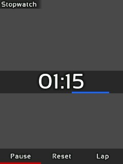
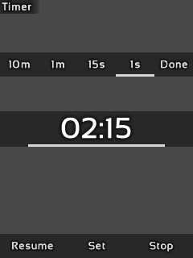
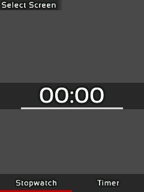

About Teensy Stopwatch
The Teensy Stopwatch is a DIY device that uses the Teensy 4.0 micro-controller for displaying and running a little stopwatch app onto an TFT LCD module, if as if it were a smartphone.
- Credits to xsxeth for taking the photos of this project!
How It Works
Since the Teensy 4.0 micro-controller has a powerful ARM Cortex processor with 1 MB of ram, it is totally feasible to create a responsive user interface with it.
It has enough memory to store a 320x240 colored image, and this allows the application to buffer the user interface into it for faster performance as opposed to writing to the LCD module for every draw command which can be slow. In order to send this image data to the LCD to display, it uses the SPI interface. The Teensy micro-controller has a hardware accelerated implementation of SPI, therefore, this allows an asynchronous transfer of data to the screen without occupying the processor's computational power.
Nonetheless, implementing an efficient driver for the module is an intimidating task, for the module and SPI interface has many technicalities to be aware of in order to use them efficiently. Fortunately, vindar from GitHub as already developed a sophisticated driver that does all the heavy lifting for us. The only things we need to do is to allocate memory for our frame-buffers (images that it is going to display) and to command an update to the driver whenever our image is ready for display. This driver has dramatically simplified the development process for this project.

For this project, I've decided to create my own UI code, but user interfacing is not easy, especially if you have to code
its functionality from scratch. However, from what I learned from modding Minecraft, it can be simplified enough in order
to not practically reinvent the wheel. What I did is create a module called UIrender that has a list of drawing commands
that can be executed in the application in order to draw interfaces. The most important commands are, drawQuad,
drawGradientQuad, drawString, and clear.
UIrender Module Commands
drawQuaddraws a quad by specifying its boundaries (left, top, right, and bottom) and its color.drawGradientQuadsimilar to last, but specified with two colors to create a gradient.drawStringdraws text by specifying the text to display, its position, size, and color.clearclears everything with a specified color; it is used for creating a background.
Text Rendering
drawString is complicated because it uses many
textured quads to display text, but how does it exactly work? For this, I give credit to a YouTuber named
ThinMatrix, for he showed a method on how to display text for games without using a game engine.
We need is an atlas (image texture) of all the glyphs of a font and a list containing positions, offsets, and boundaries for all the corresponding glyphs.
All this data can be extracted from a font by using a program called Hiero, and
the data is then converted into a C array using Python so that is can be stored within the source code.
With all this font data, we can now display glyphs. The first thing the module will do is to split every character in the string (of text) into a list of characters. For each character, it then searches from the list extracted from Hiero for its width, height, offsets, and its location on the atlas. Each character will then have a quad drawn with its glyph texture extracted from the atlas, and then the module will move its cursor by the width of the character drawn. This is done to all elements in the list which results into having text drawn.
User Input
Now we have a way to display a user interface, but the program needs to be able to respond to inputs. The Teensy Stopwatch has a rotary encoder that sends a signal when its knob is rotated or when its switch is pressed, yet due to it's “bouncing” tendencies, I used a Debouncer to remove any signal abnormalities in software for input reliability.
I created a
module called Input that polls for input changes every frame. With this module, you can add listeners (code that executes
from an event), so when the user, for example, presses the switch, the module will execute all the listeners' code that responds
to a switch press. This event driven system allows you to be able to interact with UI elements, and it simplifies user interactivity
as opposed to listening signals manually.
At last with the modules UIrender and Input written, we can code basic “screens” that the user can use. A screen element should
be able to respond to input, draw a user interface, and handle any internal logic (e.g. change screen when switch is pressed).
How To Use
There are three screens for this project, Select Screen, Stopwatch, and Timer. On upon startup, the user is met
with the Select Screen screen. The user can choose to use either the stopwatch or the timer functionality.
Stopwatch Screen

Using the Stopwatch screen, the user can start the clock by pressing Resume and stop it by pressing either Pause or Reset.
While the clock is running, the user can press the Lap button to record the exact time it was pressed.
Upon stopping the clock, the user can then press the View Laps button; this will allow the user to scroll through all of the
laps recording showing their time and duration by turning the rotary encoder.
Lastly, the user can press the Reset button
to reset the clock back to zero, and it will also clear the list of laps recorded.
Timer Screen

Using the Timer, the user can set a duration to which the clock will count down from. The user can press
the Set button to show a menu to set the timer. In this menu, the user can select 10m, 1m, 15s, 1s,
and Done.
The user selects the option and then uses the rotary encoder clockwise or counterclockwise to increment or
decrement the timer respectively. When done, the user can use another option or press Done to set the timer.
When the clock
is started by pressing Resume, it will count down until either it is paused or when the clock reaches zero. When the clock reaches zero,
it will trigger the buzzer on and off every half second until the user presses Stop to which the clock resets to the set duration.
Screen Selection

In order to change the functionality while in the Stopwatch, or Timer screen, the user must hold the switch for three seconds until
the Select Screen screen appears. The user may then select and change the functionality of the stopwatch.
Project Construction
During the development of this project, all the hardware was connected using a breadboard and jumper wires.

For the LCD module, I need to be aware that it can perform erratically if their wires connecting to the micro-controller is long. This is a result from induction formed when current passes through a wire; induction can reverberate the signal because the current cannot be switched on and off reliably at speeds of 30 megahertz (the speed which the module communicates with the micro-controller). This problem is mitigated by using short wires and by decreasing the speed in which the module is communicating at. Additionally, the LED pin of the module is connected to 5V using a 220 ohm resistor.
The rest of the components are also connected to one of the Teensy's pins. For example, the rotary encoder has the A, B, and C pins connected to the micro-controller. Furthermore, since the rotary encoder is just a module with three switches (they can only open or close a circuit, not send 0v or 3.3v), each input needs to be pulled up to 3.3v with a 1k ohm resistor in order for their inputs to be readable to the micro-controller. For the buzzer, the positive pin is connected directly to the micro-controller.

I initially tried to put this project on a perfboard, but unfortunately, it was a mess since making all the necessary connections on a tiny space manually made the circuits unreliable. I instead decided to design a custom PCB for this project because I could then add a Li-Ion battery to power this project in a compact package. I learned how to use a prototyping program called EasyEDA to design the PCB for this project.
First, I needed to create a schematic of the project by following what I did on the breadboard. However, I did not know how to create a circuit for the battery. Fortunately, I found a YouTuber by the name of GreatScott who has a video showing on how to create a battery circuit. It was a standalone circuit originally meant to be used as separate PCB module, but it was easy to implement it with the rest of the project.
When this schematic was finished, I can then import it into a PCB editor within EasyEDA to layout all the components and connect all the circuitry. I additionally created a logo for the project onto which it is printed on the back of the PCB because it looks so cool!
Once I finished designing the PCB, I sent the design to a PCB manufacturer JLCPCB. They where able to manufacture it in within a week, and it was shipped to my house in about 2 weeks. Lastly, I made a spreadsheet called a BOM containing all the components that I am going to install onto the PCB; this was used to order all the materials needed by this project.
Assembling the project was a little daunting because I needed to solder small surface mount components (like resistors) which can be tricky. Nonetheless, by using some solder flux aided with the soldering process, and, along with the BOM, I successfully assembled the project. What a thriller!

- Just a fun fact, the battery for this project is actually salvaged from an old phone!
Its Purpose
I have been fascinated on how our computers work after I learned some programming, so naturally, I got curious on how the hardware worked. I discovered Arduino, which is a micro-controller programming environment and a manufacturer of some micro-controller boards such as the Arduino UNO. Once I got a hold of an Arduino kit, and, after tinkering around with it, this gave me an idea!
I knew I had to try to attempt making a basic app using an embedded system which led me to this project. This journey has taught me so much because I had to understand how electronics work, how to design PCB's, how to assemble them, and also knowing the limitations of an embedded system (such as limited RAM or computational power). Additionally, since the Arduino programming environment uses a C like language, that has also taught me on how to be a better programmer by teaching me exactly what goes on behind the scenes such as memory management, compilers, and preprocessing.